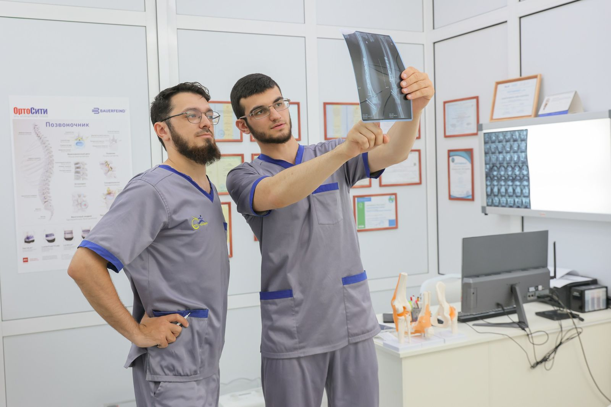
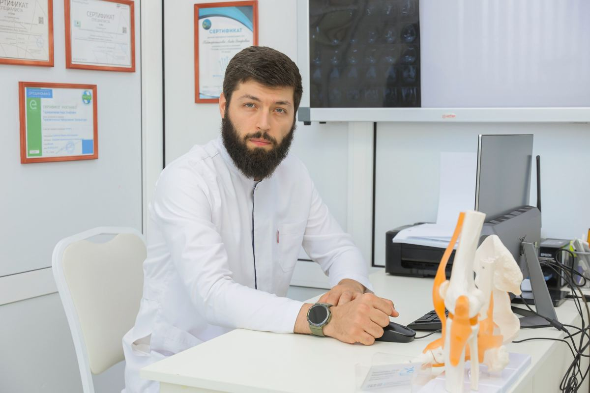

Если после операции или травмы тяжело выходить из дома. Приём — 4 000 ₽.
Перед визитом
Отмечайте — пришлём его же в WhatsApp после записи.
Пришлём памятку с подробностями в WhatsApp — бесплатно.
Как лечим


Второе мнение
Бывает, что от операции можно отказаться — если вовремя начать физиотерапию и ЛФК. Ортопед посмотрит ваши снимки и честно скажет, есть ли смысл пробовать без операции.
Удобно
Если после операции или травмы тяжело выходить из дома. Приём — 4 000 ₽.
Курс лечения можно оплатить частями. Условия подскажет администратор.
Выдадим справку для налоговой — часть расходов на лечение вернётся.
Детская ЛФК, СИАС при сколиозе, занятия при ДЦП, Войта-терапия.
Пример концепции. Фото врачей, процедур и кабинетов — центра (фотосессия 2024 со старого сайта); фото на первом экране, «Стопа», «Реабилитация» и борьба — Unsplash. Цены — прайс клиники.